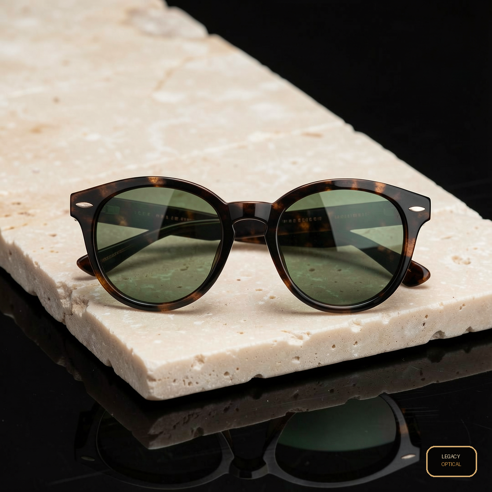

Post 01assets/legacy_optical_noir_post_01.png
ForgeGraph client handoff
Paquete armado desde el prompt operativo, con estrategia, contenido, assets, medición, QA y evidencia de linaje listos para aprobación. No se afirma publicación en vivo: el lanzamiento queda condicionado a aprobación y conectores reales.
Approval checkpoint
Artifact Index
Engagement, whiteboard, asset checksums, source deliverables, and media provenance are archived in manifest.json. The visible handoff keeps internal IDs out of client copy.
No Markdown files included.
Assets



Codex Strategy Brief
Client: Legacy Engagement: Weekend marketing sprint Objective: Launch a polished weekend social package that makes Legacy feel distinctive, premium, and unmistakably present across every post asset while addressing prior review feedback on rationale, rollout clarity, brand visibility, and image quality.
Legacy should use Optical Noir as a focused visual and messaging system, not simply a dark aesthetic. The noir direction is strategically relevant because it naturally connects to the optical category: contrast, clarity, shadow, reflection, detail, and the act of seeing what others miss.
The concept positions Legacy as precise, stylish, and editorial without losing accessibility. It gives the weekend launch a cinematic frame that can stand out in-feed while still keeping the product, brand, and offer easy to understand.
Why noir works for Legacy:
The noir system should stay elegant and legible. Blacks should feel rich, not muddy. Product details must remain visible. The campaign should feel sharp, intentional, and branded rather than overly dark or abstract.
This package is a weekend social rollout, not an operations or fulfillment plan.
The social rollout defines:
Operational logistics remain separate and should be confirmed through the appropriate implementation checklist, including staffing, appointment availability, inventory readiness, store hours, fulfillment, and customer support coverage.
Core idea: Legacy brings clarity into focus with a cinematic weekend launch built around contrast, confidence, and unmistakable style.
Primary message: See the weekend in sharper detail with Legacy.
Supporting messages:
The campaign should speak to style-conscious customers who see eyewear as both a functional purchase and a personal identity signal. The weekend timing should emphasize immediacy, discovery, and action without becoming overly promotional.
Audience mindset:
Use the feed for the strongest brand and product moments.
Recommended assets:
Use stories for pacing, urgency, and lightweight interaction.
Recommended assets:
Use Facebook for broader reach and practical clarity.
Recommended assets:
Use short-form video for movement, reflection, and transformation.
Recommended concepts:
Every post asset must include visible Legacy brand presence. This is mandatory.
Acceptable brand presence includes:
Minimum standard:
The Optical Noir look should use:
Avoid:
Tone should be confident, concise, and polished.
Example caption directions:
CTA options:
Weak images must be removed, corrected, or replaced before delivery.
Each asset should pass the following checks:
Any asset that fails brand visibility, product clarity, or resolution checks should not move into final packaging.
Primary success indicators:
Qualitative review should also track whether users can immediately identify Legacy, understand the weekend offer, and recognize the Optical Noir concept.
Brand: Confirm logo placement, visual system, and tone. Channel: Map assets to exact post formats and publish timing. CRM: Align social CTAs with booking, shop, or inquiry flows. Analytics: Set tracking links and define reporting view before launch. QA: Review all exports for weak imagery, crop safety, legibility, and brand presence. Client Approval: Present rationale, rollout distinction, brand visibility rules, and QA gate clearly.
Proceed with Optical Noir as the weekend social concept, provided every asset is held to three non-negotiable standards: the noir rationale must remain tied to optical clarity, the rollout must stay clearly social rather than operational, and Legacy must be visibly present on every post asset. Final delivery should only include images that pass QA for sharpness, product visibility, brand presence, and platform-ready polish.
Message House
Legacy Optical Noir Message House Strategic rationale: Optical Noir is a premium contrast system for product photography, not a literal night-use claim for sunglasses. Why it works: black, ivory, copper, and controlled reflections make frames and lenses feel sharper, more editorial, and easier to remember in-feed. Positioning: lujo usable para CDMX; editorial, sobrio, accesible-premium. Brand presence: every social post should carry a Legacy logo or approved brand mark treatment unless the client explicitly requests clean product-only assets. Primary CTA: revisar estilos y aprobar piezas antes de publicar. Tone: Spanish-first, concrete, low-hype, confident.
Crm Scripts
WhatsApp / DM scripts Disponibilidad: Te confirmo modelo/color y te comparto alternativas si ya se movió. Precio: Son piezas premium; te ayudo a elegir el par que mejor se vea y más uses. Cierre: ¿Quieres que te aparte este modelo o prefieres ver dos opciones más?
Measurement Plan
Track the weekend social rollout and posting cadence: post saves, replies, profile visits, link clicks, DMs, holds, sold/blocked status, and next action every 24h. This is a posting and review cadence, not a shipping or fulfillment timeline unless the client provides logistics details. Hold live claims until connector evidence exists.
Channel Asset Map
Channel Asset Map
Qa Report
QA Report Media jobs succeeded: 6/6 Client package formats: HTML, PDF, PNG, JSON manifest, ZIP; no Markdown files. Policy: no live publishing claim; approval required before production launch. Decision: ready for review